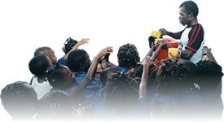

A Rudolf Steiner School
Contact UsFreetown, Sierra Leone
“Our highest endeavour must be to develop free human beings who are able of themselves to impart purpose and direction to their lives.”Rudolf Steiner


Get involved...
The Goderich Waldorf Ethos
- by Sally Jenkinson
For many children today, the world is a deeply unstable and frightening place, where nothing can be taken for granted, not even the luxury of having parents; where poverty, pain, and loss are an inevitable part of life. An education which values joy, emphasises goodness and has security, continuity and commitment to the child at its core, may go some way towards re-shaping a child's damaged sense of trust in the world.
How can Waldorf education contribute to the restoration of the war damaged child's well-being?
In the early years everything that surrounds the child should breathe an atmosphere of happiness and joy, said Steiner. For children who have lived through trauma, and experienced pain beyond their years, the healing element of joy in their lives is critical to their future well-being.
Waldorf educators feel that children need the peace of a long, slow-paced, active and engaged childhood, with plenty of time to make hosts of new discoveries, which consolidate the process of knowing the self and the world. As Joseph Chilton Pearce, former humanities teacher and author of “The Magical Child” puts it:
“Structuring knowledge of the world takes at least six years because the world is filled with many things.”
He says that the child must interact with the actual world as a place of rocks, trees, grasses, bugs, sun, moon, wind clouds, rain, and a “million things”. A damaged child may also need time to re-kindle a fragile sense of wonder in the safety of the Waldorf environment.
Sally Jenkinson works with the Alliance for Childhood, and is an Early Years Consultant with the UK Steiner Waldorf Schools Fellowship. She was a Kindergarten teacher for many years.